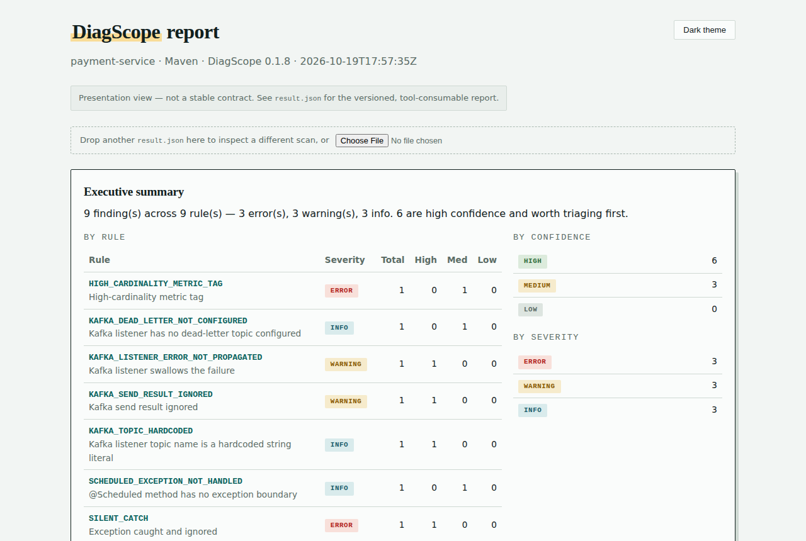

DiagScope escaneia projetos Java e Kotlin em busca de padrões que destroem silenciosamente as evidências de diagnóstico — exceções engolidas, transações ausentes, chamadas HTTP sem timeout. Roda localmente, nenhum dado sai da sua máquina.
Sem build necessário · Java & Kotlin · Spring / Quarkus / Micronaut
Exceções, transações, concorrência, Kafka, performance, segurança e mais. Cada ocorrência identifica o entrypoint que chega ao problema.
Capturada e nunca logada ou relançada — a falha simplesmente desaparece.
Uma thread fica bloqueada indefinidamente esperando um resultado que pode nunca chegar.
Se um passo posterior falhar, a primeira escrita é commitada e não pode ser revertida.
Um upstream lento esgota o pool de threads e derruba o serviço inteiro.
Uma chamada ao banco dentro de um loop — escala linearmente e degrada com o crescimento dos dados.
O resultado do publish é descartado — falhas ficam invisíveis para quem chamou.
O Java é incluído automaticamente — nada mais para configurar.
Sem etapa de build. Funciona com Maven e Gradle.
Saídas HTML, Markdown e JSON em target/diagscope/ ou build/diagscope/.
Abra o report.html em qualquer navegador. É um único arquivo autocontido: sem servidor, sem rede. Ele ordena o que corrigir primeiro, filtra por severidade e confiança e mostra o caminho de chamadas do entrypoint até cada ocorrência.

Endpoints REST, Kafka listeners e jobs agendados são detectados automaticamente como entrypoints.
Falhe o build apenas nas ocorrências introduzidas neste PR, deixando as existentes para depois.
Veja a descrição completa, por que importa e como corrigir.
O catálogo cresce a cada versão, então pergunte à ferramenta: ela lista todas as regras com severidade, categoria e versão.
Quando o time gera código com um assistente, o DiagScope pode rodar antes de o assistente dizer que terminou. Assim exceções engolidas e logs ausentes são corrigidos na mesma sessão, e não em produção.
Escreve um bloco curto de instruções em AGENTS.md e CLAUDE.md e adiciona um hook do Claude Code que escaneia os arquivos alterados quando a tarefa termina. O conteúdo existente nunca é sobrescrito.
Texto simples e compacto, com o pior problema primeiro e uma linha de correção para cada um. Cerca de 3 KB onde o relatório em Markdown tem 22 KB. O código de saída continua vindo do seu gate.
A tolerância fica no diagscope.yml, então é revisada junto com o código. Falhe em erros de alta confiança, tolere alguns avisos ou defina um perfil mais rígido para branches de release.
O hook automático é para o Claude Code. Outros assistentes leem as instruções do AGENTS.md e rodam o mesmo comando, mas nada os obriga. Um scan leva de 1 a 15 segundos conforme o tamanho do projeto, por isso a checagem roda no fim da tarefa, não a cada edição. O assistente é instruído a não silenciar um problema sem perguntar a você.
Dois comandos e você já está rodando.